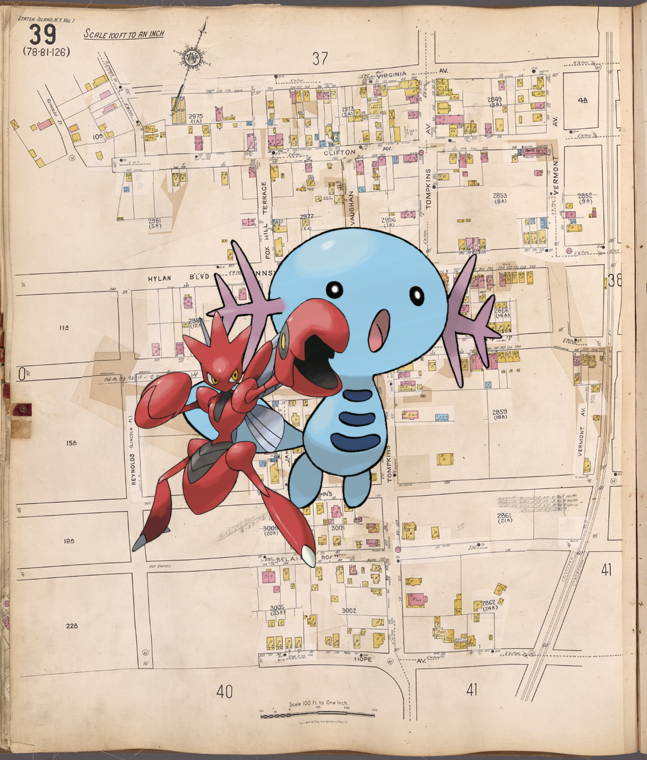

-
Slowbro + Entry for 1853.
-
Seel + Plate U.
-
Noivern, on [Xanten Bible.]!
-
![Swablu ; Bronx, V. 10, Plate No. 73 [Map bounded by Merriam Ave., Boscobel Ave., Nelson Ave., W. 170th St.] http://digitalcollections.nypl.org/items/c2662600-c5fb-012f-79ae-58d385a7bc34](media/finding-KiJIupvK.png)
-
Beautifly ; Childhood's happy days!
-
Panpour ; Part of Elmira [cont.]!
-
![Pichu, Tauros + DINNER [held by] NORDDEUTSCHER LLOYD BREMEN [at] SS BARBAROSSA (SS;). http://digitalcollections.nypl.org/items/5c0af680-c53b-012f-732c-58d385a7bc34](media/finding-DvJUvWzJ.png) Pichu, Tauros on DINNER [held by] NORDDEUTSCHER LLOYD BREMEN [at] SS BARBAROSSA (SS;).
Pichu, Tauros on DINNER [held by] NORDDEUTSCHER LLOYD BREMEN [at] SS BARBAROSSA (SS;). -
Gurdurr | S.S. Maasdam!
-
Tangela | State Department, Washington.
-
Taillow – EM. 6897.
-
Tangrowth, Lumineon + S.S. America.
-
Caterpie + Moore, Sir Henry. New York
-
Ariados on The Commodore Hotel
-
Persian ; Translation of 2480
-
Palkia on The Dance of Herodias' Daughter!
-
Ralts + [Bonaparte], Napoleon!
-
Delcatty on 1812 October 12.
-
 Talonflame, ; Playmate Nell!
Talonflame, ; Playmate Nell! -
– New Orleans..
-
Dedenne, Huntail + EM. 14933
- 
-
 Darkrai – Le bastion 84.!
Darkrai – Le bastion 84.! -
 Beartic, Latios + Potosi..
Beartic, Latios + Potosi.. -